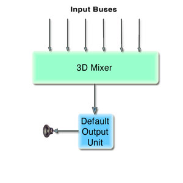
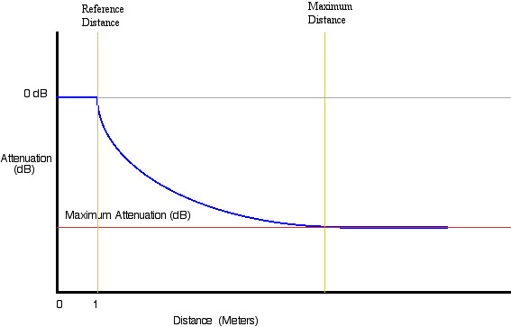

| ADC Home > Reference Library > Technical Notes > Audio > Carbon > | |
|
The v2.0 3DMixer Audio Unit has the ability to localize sound in 3-dimensional space, that is, position multiple sound sources by distance, elevation, and azimuth around a listener. The 3DMixer can render to multiple channel layouts (discussed below in the Speaker Configuration section). In addition, the quality of sound rendered during playback can be adjusted to meet CPU performance demands. Creating an AUGraph for the 3DMixerFigure 1: The 3D Mixer  3DMixers are typically inserted into an Audio Unit Graph ( The head of a graph is always an output unit, which may save the processed audio stream to disk, into memory, or as sound out. Starting a graph entails 'pulling' on the head audio unit (where data will exit the graph), which will, in turn, pull data from the connected audio units in the graph. For this technote, we will use default output audio unit as the head of the graph. The default output unit will represent the output device (speakers, in most cases) selected by the user in Audio MIDI Setup application or the System Prefrences Output Panel. For more information about using Audio Unit Graphs, please read Using the Audio Toolbox. To begin setting up our graph, we must add nodes for the 3DMixer and a Default Output Listing 1: Creating an AUGraph and adding nodes
void MyCreateAUGraph( AUGraph mAUGraph,AudioUnit mOutputUnit,
AudioUnit mMixerUnit)
{
AUNode mMixerNode, mOutputNode;
NewAUGraph(&mAUGraph);
ComponentDescription mixerCD;
mixerCD.componentFlags = 0;
mixerCD.componentFlagsMask = 0;
mixerCD.componentType = kAudioUnitType_Mixer;
mixerCD.componentSubType = kAudioUnitSubType_3DMixer;
mixerCD.componentManufacturer = kAudioUnitManufacturer_Apple;
AUGraphNewNode (mAUGraph, &mixerCD, 0, NULL, &mMixerNode);
ComponentDescription cd;
cd.componentFlags = 0;
cd.componentFlagsMask = 0;
cd.componentType = kAudioUnitType_Output;
cd.componentSubType = kAudioUnitSubType_DefaultOutput;
cd.componentManufacturer = kAudioUnitManufacturer_Apple;
AUGraphNewNode (mAUGraph, &cd, 0, NULL, &mOutputNode);
//Open the Graph
AUGraphOpen (mAUGraph);
//Get Audio Units from graph
AUGraphGetNodeInfo (mAUGraph, mMixerNode, 0, 0, 0, &mMixerUnit);
AUGraphGetNodeInfo (mAUGraph, mOutputNode, 0, 0, 0, &mOutputUnit);
}
Now that the graph has been created we must setup the 3DMixer appprioprately before initializing and starting the graph. Setting the Bus countThe number of inputs (or busses) of the 3Dmixer is a settable property. By default, the 3DMixer has 64 busses. Since busses incur memory usage, the bus count should not be set higher than necessary for the application's needs. Setting this property should be done prior to initializing the mixer unit. Listing 2: Setting the mixer bus count
OSStatus SetMixerBusCount (UInt32 inBusCount)
{
UInt32 size = sizeof(UInt32);
UInt32 busCount = inBusCount;
return (AudioUnitSetProperty ( mMixerUnit,
kAudioUnitProperty_BusCount,
kAudioUnitScope_Input,
0,
&busCount,
size));
}
Using the Internal ReverbThe 3Dmixer has a built-in reverb. Once turned on, reverb is applied on a per input bus basis (as described below). Reverb is off by default and can be turned on with the Listing 3: Enabling the internal reverb
UInt32 reverbSetting = 1 // turn it on;
result = AudioUnitSetProperty(mMixerUnit,
kAudioUnitProperty_UsesInternalReverb,
kAudioUnitScope_Global,
0,
&reverbSetting,
sizeof(reverbSetting));
Now that reverb has been turned ON for the 3DMixer, reverb can be enabled per bus by setting the Listing 4: Turning reverb on for a bus
UInt32 render_flags_3d;
UInt32 outSize = sizeof(render_flags_3d);
// get the current render flags for this bus
result = AudioUnitGetProperty (mMixerUnit,
kAudioUnitProperty_3DMixerRenderingFlags,
kAudioUnitScope_Input,
busIndex,
&render_flags_3d,
&outSize);
// turn on this render flag and then set the bus
render_flags_3d |= k3DMixerRenderingFlags_DistanceDiffusion;
result = AudioUnitSetProperty( mMixerUnit,
kAudioUnitProperty_3DMixerRenderingFlags,
kAudioUnitScope_Input, busIndex,
&render_flags_3d,
sizeof(render_flags_3d));
Speaker ConfigurationsThe v2.0 3DMixer can render audio to stereo, quad, and 5.0 channel layouts. Although the v2.0 3DMixer appropriately sets its channel layout when the output stream format is set, it is recommended that the channel layout be explicitly set. Therefore no changes are required to your code, should a future version of the mixer be released that supports multiple channel layouts that use the same number of channels (i.e. 5.1 and 6.0). When explicitly setting the channel layout be sure to pick a layout that matches the channel count of the stream format or an error will be returned (setting the channel layout to quad for example, if the stream format has 5 channels will return an error). In order to take full advantage of the mixer's ability to render to multiple channel layouts, it is necessary to determine what the user has set for the Speaker Configuration in the Audio MIDI Setup application (see example below) by querying the current device for it's output channel layout. By querying the output unit of the graph, the following code determines an appropriate channel count to be used when setting the stream format (output scope) of the mixer. Note: Be aware that there could also be a situation when a Speaker Configuration (channel layout) has been set by the user in Audio MIDI Setup for a multi-channel hardware device. However, there may not be speakers connected to all the hardware channels (i.e. 2 speakers connected to an 8 channel device). In this case, it may be desirable to let the user specify stereo rendering, allowing the application to clamp to stereo to prevent audio data being rendered to a device channel with no speaker connected. Listing 5: Determining the correct number of channels to render to
UInt32 GetDesiredRenderChannelCount ()
{
OSStatus result = noErr;
// get the HAL device id form the output AU
AudioDeviceID deviceID;
UInt32 returnValue = 2; // return stereo by default
UInt32 outSize = sizeof(deviceID);
//get the current device
AudioUnitGetProperty(mOutputUnit,
kAudioOutputUnitProperty_CurrentDevice,
kAudioUnitScope_Output,
1,
&deviceID,
&outSize);
//Get the users speaker configuration
result = AudioDeviceGetPropertyInfo(deviceID,
0,
false,
kAudioDevicePropertyPreferredChannelLayout,
&outSize,
NULL);
if (result != noErr)
return (returnValue); // return default (stereo)
AudioChannelLayout *layout = NULL;
layout = (AudioChannelLayout *) calloc(1, outSize);
if (layout != NULL)
{
result = AudioDeviceGetProperty(deviceID,
0,
false,
kAudioDevicePropertyPreferredChannelLayout,
&outSize,
layout);
if (layout->mChannelLayoutTag
== kAudioChannelLayoutTag_UseChannelDescriptions)
{
// no channel layout tag is returned,
//so walk through the channel descriptions and count
// the channels that are associated with a speaker
if (layout->mNumberChannelDescriptions == 2)
{
returnValue = 2; // there is no channel info for stereo
}
else
{
returnValue = 0;
for (UInt32 i = 0; i < layout->mNumberChannelDescriptions; i++)
{
if (layout->mChannelDescriptions[i].mChannelLabel !=
kAudioChannelLabel_Unknown)
returnValue++;
}
}
}
else
{
switch (layout->mChannelLayoutTag)
{
case kAudioChannelLayoutTag_AudioUnit_5_0:
case kAudioChannelLayoutTag_AudioUnit_5_1:
case kAudioChannelLayoutTag_AudioUnit_6:
returnValue = 5;
break;
case kAudioChannelLayoutTag_AudioUnit_4:
returnValue = 4;
default:
returnValue = 2;
}
}
free(layout);
}
return returnValue;
}
IMPORTANT: The mixer's output stream format must be set before connecting it to the output unit. After connecting the mixer to the output unit, the channel layout must be explicitly set to match the input scope layout of the output unit. Listing 6: Configuring the AUGraph For Channel Layout
void ConfigureGraphForChannelLayout()
{
OSStatus result = noErr;
// get the channel count that should be set
// for the mixer's output stream format
mCurrentMixerChannelCount = GetDesiredRenderChannelCount();
// set the stream format
CAStreamBasicDescription format; //CoreAudio SDK class
UInt32 outSize = sizeof(format);
result = AudioUnitGetProperty(mOutputUnit,
kAudioUnitProperty_StreamFormat,
kAudioUnitScope_Output,
0,
&format,
&outSize);
// not interleaved
format.SetCanonical (mCurrentMixerChannelCount, false);
format.mSampleRate = mMixerOutputRate;
outSize = sizeof(format);
result = AudioUnitSetProperty (mOutputUnit,
kAudioUnitProperty_StreamFormat,
kAudioUnitScope_Input,
0,
&format,
outSize);
result = AudioUnitSetProperty (mMixerUnit,
kAudioUnitProperty_StreamFormat,
kAudioUnitScope_Output,
0,
&format,
outSize);
return;
}
Localizing sound in 3D spaceSetting the distance, elevation and azimuth of a bus causes the listener to perceive the audio from a specific point in a 3-dimensional space. The pitch and gain of the audio sources can be changed per bus within the 3DMixer. The pitch can be changed by modifying the value of the parameter Note: The gain referred to here is for scaling the volume of the actual audio data. All spatial attenuation of the audio is done by setting the distance parameter on the mixer bus. Table 1: 3-Dimensional Parameters (Location)
Table 2: 3-Dimensional Parameters ( Volume and Pitch)
Listing 7: Setting the distance and azimuth
void SetObjectCoordinates(UInt32 inMixerInputBus, Float32,
inAzimuth, Float32 inDistance)
{
AudioUnitSetParameter(mMixerUnit,
k3DMixerParam_Azimuth,
kAudioUnitScope_Input,
inMixerInputBus,
inAzimuth,
0);
AudioUnitSetParameter(mMixerUnit,
k3DMixerParam_Distance,
kAudioUnitScope_Input,
inMixerInputBus,
inDistance,
0);
}
Starting with the v2.0 3DMixer, it is possible to have the mixer do all the work necessary to clamp the bus volume based on specified ReferenceDistance, MaximumDistance and Attenuation settings. This feature allows an application to specify how close/far away an object in 3D space can actually get to/from the listener. The following method demonstrates how to properly set/get a mixer bus's DistanceParams with the Listing 8: Mixer Distance Parameters struct defined in AudioUnitProperties.h
typedef struct MixerDistanceParams {
Float32 mReferenceDistance;
Float32 mMaxDistance;
Float32 mMaxAttenuation; // in decibels
} MixerDistanceParams;
Figure 2: Distance Parameters Graph  Listing 9: Setting the Distance Parameters for a bus
void SetDistanceParamsForBus (UInt32 inMixerInputBus)
{
MixerDistanceParams distanceParams;
// Get the desired minimum distance an object
// can get to the listener (float value in meters)
// The mixer will play audio on the bus with 0db
// of attenuation (no attenuation) for all distance coordinates
// between 0.0 and this reference distance. This
//value must be less than the maximum distance setting.
distanceParams.mReferenceDistance = GetMyMinimumDistance();
// Get the desired maximum distance an object
// can get from the listener (float value in meters)
// The mixer will stop attenuating audio on the bus
// for all distance coordinates at this maximum
// distance or greater. This value must be greater
// than the reference distance setting.
distanceParams.mMaxDistance = GetMyMaximumDistance();
// Get desired attenuation (in db) for an object when it's
// coordinates are at or beyond the maximum distance
// (positive float value in dB).
// The mixer will not attenuate the audio further than
// this db setting when the distance coordinates are beyond the
// maximum distance setting.
distanceParams.mMaxAttenuation = GetMyMinimumAttenuation();
OSStatus result = AudioUnitSetProperty(mMixerUnit,
kAudioUnitProperty_3DMixerDistanceParams,
kAudioUnitScope_Input,
inMixerInputBus,
&distanceParams,
sizeof(distanceParams));
}
Spatialization Rendering AlgorithimsSpatialization settings are on a per bus (mixer input) basis and set with Table 3: Spatailization Algorithims appropriate for Stereo Output (from AudioUnitProperies.h)
Listing 10: Setting the 3DMixer to a Spatialization Algorithims
SetSpatializationAlgorithm( UInt32 BusNumber)
{
UInt32 spatialSetting = GetMySpatializationSetting();
result = AudioUnitSetProperty(mMixerUnit,
kAudioUnitProperty_SpatializationAlgorithm,
kAudioUnitScope_Input,
BusNumber,
&spatialSetting,
sizeof(spatialSetting));
}
Setting the volumeThe volume can be explicitly set for each bus on the input scope of the 3DMixer, providing a gain before the sound is mixed. Use the Listing 11: Setting the volume on input
// busGain represents a range of 0.0 to 1.0 (full volume)
SetInputBusGain(UInt32 mCurrentPlayBus, Float32 busGain)
{
Float32 db = 20.0 * log10(busGain); // convert to db
if (db < -120.0)
db = -120.0; // clamp minimum audible level at -120db
AudioUnitSetParameter(mMixerUnit,
k3DMixerParam_Gain,
kAudioUnitScope_Input,
mCurrentPlayBus,
db,
0);
}
Bus Stream Formats and the FormatConverterAUIf a Note: When setting the stream format of a mixer's bus, remember that the mixer expects to receive stereo data as de-interleaved. Connecting, Initializing & Starting the AUGraphSetup is now complete and we can connect the 3DMixer to the default output audio unit. When all connections are made and nodes are setup up correctly, you must initialize the Listing 12: Connecting, Initializing & Starting the AUGraph
AUGraphConnectNodeInput (mAUGraph, mMixerNode, 0, mOutputNode, 0);
AUGraphInitialize (mAUGraph);
AUGraphStart(mAUGraph);
Disposing of the AUGraphThe method Listing 13: Stopping and disposing the graph
AUGraphStop (mAUGraph);
DisposeAUGraph (mAUGraph);
mAUGraph = 0;
ConclusionCoreAudio's 3DMixer is very a useful audio tool. The mixers ability to handle audio from multiple sources and localize the sounds in 3D space is a necessity in games and can be amazing in countless other applications. References and NotesDocument Revision History
Posted: 2004-06-14 |
|